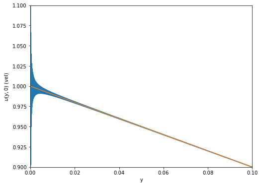

Gibbs phenomenon in Acheson 2.3
Gibbs phenomenon in Acheson 2.3¶
The goal of this is to show that there is a problem with imposing \(u(y,0) = 0\) when \(u(y,t) = \frac{U}{h}(h - y) - \sum_{n=1}^{\infty} \frac{2 U}{n \pi} e^{-n^2 \pi^2 \nu t/h^2} \sin \frac{n \pi y}{h}\), the solution to the last example in sec. 2.3 of Acheson.
#Importing packages
import numpy as np
import matplotlib.pyplot as plt
#Defining constants
U = 1 # velocity of lower plate
h = 1 # height of channel
nu = 1 # kinematic viscosity
Nmax = 10000 # maximum mode number in truncated Fourier series
Set up c_n
cn = (2*U/(np.arange(1,Nmax+1)*np.pi))
Define our truncated Fourier series
# Set x range, define array of output of functions
X = np.arange(0,h+.0001,.0001)
truncated = np.sum(cn[:,np.newaxis]*np.sin(np.arange(1,Nmax+1)[:,np.newaxis]*np.pi*X[np.newaxis,:]/h),axis = 0)
static = U*(h - X)/h
Plot result
plt.figure(figsize=(8,6))
plt.plot(X,truncated,label='truncated {:n} Fourier modes'.format(Nmax))
plt.plot(X,static,label='long time behavior')
plt.xlabel('y')
plt.ylabel('$u(y,0)$ (vel)')
plt.ylim(.9*h,1.1*h)
plt.xlim(0,.1)
plt.show()

You can see the overshoot developing near the origin.